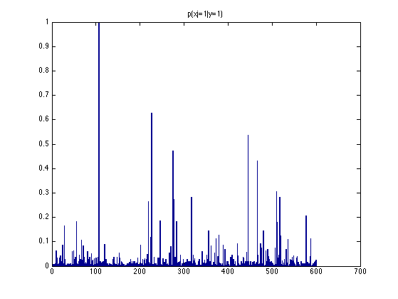
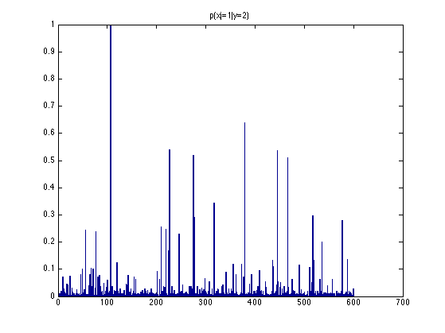

Naive bayes classifier applied to text data (bag of words)
Contents
Load data
if 1
loadData('XwindowsDocData');
Xtrain = xtrain; Xtest = xtest;
else
loadData('20news_w100')
X = shuffleRows(documents');
Xtrain = X(1:60, :);
Xtest = X(61:end,:);
end
Train and test
model = naiveBayesFit(Xtrain, ytrain);
ypred_train = naiveBayesPredict(model, Xtrain);
err_train = mean(zeroOneLossFn(ytrain, ypred_train));
ypred_test = naiveBayesPredict(model, Xtest);
err_test = mean(zeroOneLossFn(ytest, ypred_test));
fprintf('misclassification rates on train = %5.2f pc, on test = %5.2f pc\n', ...
err_train*100, err_test*100);
misclassification rates on train = 8.33 pc, on test = 18.67 pc
Visualize class conditional densities
C = length(unique(ytrain(:)));
for c=1:C
figure;
bar(model.theta(c,:));
title(sprintf('p(xj=1|y=%d)',c))
printPmtkFigure(sprintf('naiveBayesBow%dClassCond', c));
end
N = 5;
for c=1:C
[sortedProb, ndx] = sort(model.theta(c,:), 'descend');
fprintf('top %d words for class %d\n', N, c);
for w=1:N
fprintf(2,'%2d %6.4f %20s\n', w, sortedProb(w), vocab{ndx(w)});
Mp(w,c) = sortedProb(w);
Mw{w,c} = vocab{ndx(w)};
end
fprintf('\n\n');
end
top 5 words for class 1
1 0.9978 subject
2 0.6283 this
3 0.5354 with
4 0.4712 but
5 0.4314 you
top 5 words for class 2
1 0.9978 subject
2 0.6394 windows
3 0.5398 this
4 0.5376 with
5 0.5177 but
 
Compute mutual information between words and class labels
[mi] = mutualInfoClassFeaturesBinary(Xtrain,ytrain);
[sortedMI, ndx] = sort(mi, 'descend');
fprintf('top %d words sorted by MI\n', N);
for w=1:N
fprintf(2,'%2d %6.4f %20s\n', w, sortedMI(w), vocab{ndx(w)});
Mi(w) = sortedMI(w);
Miw{w} = vocab{ndx(w)};
end
fprintf('\n\n');
top 5 words sorted by MI
1 0.2150 windows
2 0.0955 microsoft
3 0.0921 dos
4 0.0782 motif
5 0.0673 window
Make latex table
for i=1:N
M{i,1} = Mw{i,1}; M{i,2} = Mp(i,1);
M{i,3} = Mw{i,2}; M{i,4} = Mp(i,2);
M{i,5} = Miw{i}; M{i,6} = Mi(i);
end
MM = [Mw(:, 1), mat2cellRows(Mp(:, 1)), ...
Mw(:,2), mat2cellRows(Mp(:, 2)), ...
Miw(:), mat2cellRows(Mi(:))];
assert(isequal(M, MM))
colLabels = {'class 1', 'prob', 'class 2', 'prob', 'highest MI', 'MI'};
latextable(M, 'horiz', colLabels, 'Hline',[1], 'format', '%5.3f');
\begin{tabular}{cccccc}
class 1 & prob & class 2 & prob & highest MI & MI \\
\hline
subject &0.998 &subject &0.998 &windows &0.215\\
this &0.628 &windows &0.639 µsoft &0.095\\
with &0.535 &this &0.540 &dos &0.092\\
but &0.471 &with &0.538 &motif &0.078\\
you &0.431 &but &0.518 &window &0.067\\
\end{tabular}